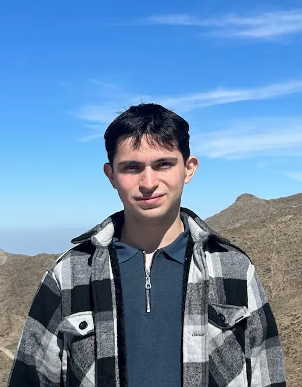

Faivel Klein | WDD 130
Hello! I am Faivel Klein, a 24 years-old guy from Argentina. I love to eat a local food called milanesa, and those made out of cowmeat, with fries. I go to the gym weekly and serve in my Church.
Hello! I am Faivel Klein, a 24 years-old guy from Argentina. I love to eat a local food called milanesa, and those made out of cowmeat, with fries. I go to the gym weekly and serve in my Church.